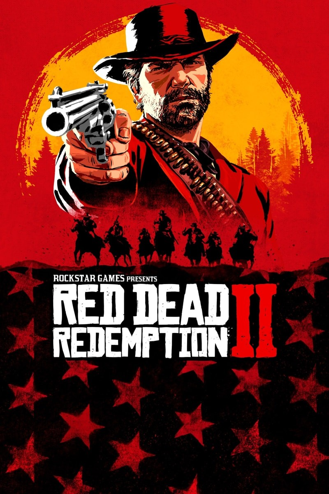

Playstation 4: O auge da geração
O PlayStation 4, lançado em 2013, se consolidou como um dos consoles mais populares e bem-sucedidos de todos os tempos. Ele aprimorou os conceitos introduzidos pelo PS3 e ofereceu uma experiência de jogo ainda mais rica e envolvente. O PlayStation 4 deixou um legado duradouro na indústria dos videogames, definindo novos padrões em termos de gráficos, jogabilidade e conectividade. Seu sucesso impulsionou a venda de milhões de unidades e solidificou a posição da Sony como líder no mercado.

Por que ele foi tão importante?
- Biblioteca de jogos vasta: O PS4 ofereceu uma biblioteca de jogos diversificada, com títulos para todos os gostos e idades.
- Facilidade de uso: O PS4 tinha uma interface amigável e fácil de navegar, tornando-o acessível a jogadores de todas as idades.
- Preço competitivo: O PS4 foi lançado com um preço mais competitivo em relação à concorrência.
Jogos



Algumas curiosidades:
- O PS4 foi lançado em três versões principais: Standard, Slim e Pro.
- O jogo mais vendido para o PS4 foi o Grand Theft Auto V.
- O PS4 foi descontinuado em 2022, mas continua sendo muito popular entre os jogadores.